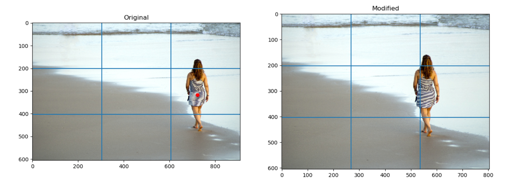
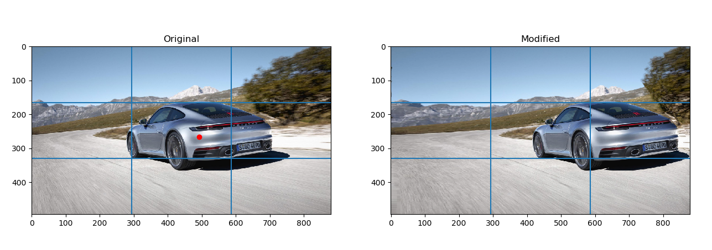

Qualitative Results
1) Human Success Cases
a) In the two figures below, the subject is located in the middle between the two vertical rule-of-thirds lines. She is closer to the right side, so we will want to align her along that line. To do so, our seam carving algorithm removed seams from the right of the subject to move the vertical rule-of-thirds line to the left. Our algorithm also applies the red dot in the original picture to denote the center of the object of interest. The background of the picture has no significant objects/features so our seam removal has little negative consequences on the aesthetic of the picture.
b) For the next two figures below, the original picture is already quite close to placing the subject along the second-third line; she is a little too far to the right of it when using the rule of thirds line as the base point. For this image, our algorithm removes vertical seams from the left of the subject.
c) In the next two figures below, the subject in this image is in the center, but he is closer to the left rule-of-thirds line. To align the two, we remove seams to the left of the person.
d) In the next two figures below, the subject is located far to the right in this picture, close to the right boundary of the image. Our algorithm does a series of seam additions to the right of the woman and seam removals to the left of the woman until she is aligned correctly onto the second rule-of-thirds line.

2) Object/Animal Success Cases
a) In the original figure, the fire hydrant is located far to the right of the picture. Because of its location, we have done seam additions to the right of the object and seam removals to the left of it. The seam additions are not very noticeable but can be found by looking at the very slight discrepancy in the grass texture to the right of the fire hydrant in the modified image.
b) Based upon the red dot in the original image, the kitten's center is to the left of the second rule-of-thirds line. As a result, we moved the kitten's center to the right and had our algorithm emphasize seam removals more than seam additions for this case.
c) Similar to the kitten figures above, the Tesla's center can be found close to the center of the picture, but ultimately it is closer to the second rule-of-thirds line than it is to the first rule-of-thirds line. As a result, the Tesla is moved rightwards with an emphasis on seam removals. While the car was successfully placed onto the second rule-of-thirds line, the seam removals are slightly noticeable because the yellow road lines are slightly malformed.

d) For these figures, the center of the car was detected to be closer to the second rule-of-thirds line. While the car was successfully moved to this line, the car in the original picture took up a larger proportion of the image, meaning that the trunk is slightly closer to the right of the modified image than desired. Our algorithm opted to do seam additions more to the left when more additions to the right would have been preferable. Still, we consider this a success case because the car was moved successfully, no noticeable artifacts occurred, and the car itself did not become malformed.

e) According to our algorithm, the center of the flowers is closer to the first rule-of-thirds line and was thus moved rightward. Because the floor and background's overall coloring scheme is relatively consistent, there are no noticeable artifacts despite having seam additions and removals.

f) Because of our bounding box calculations, the algorithm opted to place the center of the dog slightly to the left of its mouth because of the position of its hind legs. While a photographer might have more emphasized the dog's face when framing it for the rule of thirds, our algorithm placed the center of the dog's bounding box on the first rule-of-thirds line. The background is also slightly blurrier, meaning any artifacts that could have potentially shown up would blend in with the background despite our algorithm's changes. This means our algorithm for rule of thirds works especially well with other photographic elements such as having a different lense type or aperture setting with a more blurred background.
3) Multiple Human/Object/Animal Success Cases
a) For the first two figures below, our algorithm first selects the child as the person of interest and finds its bounding box. For the second two figures, our algorithm selects the teddy bear as the object of interest. Based upon the figures' respective centers, we are able to take into account multiple humans, animals, or objects and showcase different combinations of pictures which adhere to the rule of thirds.
b) We find different combinations of pictures based upon the center of the dog and person. Even though their relative centers are close to each other, when the dog is selected as the object of interest, the modified image contains a malformed human as compared to when the human is selected as the object of interest. This means that our algorithm occasionally cannot fully account for multiple objects when they are in close proximity to each other, but that is ameliorated by the fact that different outputs are generated which can still contain stable outputs.
c) For this case, while there are three distinct objects (dog, cat, and tree trunk), our Mask R-CNN is only able to recognize the cat and dog. As such, the bounding boxes are selected for those two animals, and both outputs represent success cases because the animals in the original figure were not in close enough proximity to overlap with the other rule-of-thirds line.
e) Even though the dog and cat in this picture are slightly overlapping each other, the output with the dog's center chosen for the bounding box has a slightly better output than the one with the cat's center because there noticeable seam additions when the cat is moved to the second rule-of-thirds line as compared to the when the dog is moved to the first rule-of-thirds line.
f) Similar to the case above, a kitten and puppy are the subjects of interest. Because each animal is already close to a respective rule-of-thirds line, there were no problems in selecting the bounding boxes, placing the animals on a rule-of-third line, and doing seam removals and additions.
4) Failure Cases
a) The two figures below represent an example of a failure case for our algorithm. The subject is in the center of the image but closer to the vertical first third line. When our algorithm removes seams from the left of the person, the seam carving algorithm has no knowledge of the road in the background or the straight edges of the side of the road that should be maintained. Thus, the removals leave obvious artifacts.
b) In the presence of many objects that are clustered together or are in front of each other, the output images for different bounding boxes result in warping via seam removals and additions. For the figure alone, there is not enough space in between each person or car for their to be non-overlapping bounding boxes.
c) For this image, there are too many different objects and people in the background that negatively affect the modified output after our algorithm has been run. Furthermore, the people are relatively close to each other, meaning any seam removal distorts the shape of the peoples' bodies.